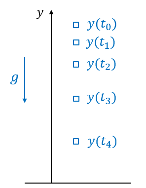

❄️ ICE6: Least Squares#
A note on this document
This document is known as a Jupyter notebook; it is used in academia and industry to allow text and executable code to coexist in a very easy-to-read format. Blocks can contain text or executable code. To run the executable code in this notebook, click  For blocks containing code, press
For blocks containing code, press Shift + Enter, Ctrl+Enter, or click the arrow on the block to run the code. Earlier blocks of code need to be run for the later blocks of code to work.
Least Sqaures Regression#
We need to solve a least squares regression problem to find a linear equation that best fits the measured data. Let the measured data is given by \(\mathbf{y} = (y_1, y_2, \cdots, y_n)\) and the corresponding values are given by \(\mathbf{x} = (x_1, x_2, \cdots, x_n)\).
The goal is to find \(m\) and \(b\) such that \(y = mx + b\) best approximates the linear relationship between \(x\) and \(y\).
Let’s first plot the data
import numpy as np
import matplotlib.pyplot as plt
x = np.array([0, 1, 2, 3])
y = np.array([-1, 0.4, 0.7, 2.1])
plt.plot(x, y, 'o', markersize=10)
plt.xlabel('x')
plt.ylabel('y')
plt.grid('on')
plt.show()
First, we can rewrite the line equation as \(y = \mathbf{c} \cdot \mathbf{q}\), where
\(\mathbf{c} = \begin{bmatrix} x & 1\end{bmatrix}\) and \(\mathbf{q} = \begin{bmatrix} m \\ b\end{bmatrix} \). That is,
\(y = mx + b = \begin{bmatrix} x & 1\end{bmatrix} \begin{bmatrix} m \\ b\end{bmatrix} = \mathbf{c} \cdot \mathbf{q}\)
Given \(\mathbf{x} = (x_1, x_2, \cdots, x_n)\) and \(\mathbf{y} = (y_1, y_2, \cdots, y_n)\), we can obtain
\(\begin{bmatrix} -1 \\ 0.4 \\ 0.7 \\ 2.1\end{bmatrix} = \begin{bmatrix} 0 & 1 \\ 1 & 1 \\2 & 1 \\3 & 1 \end{bmatrix} \begin{bmatrix} m \\ b\end{bmatrix}\) or \(\mathbf{y} = C\mathbf{q}\),
where
\(C = \begin{bmatrix} x_1 & 1 \\ x_2 & 1 \\x_3 & 1 \\x_4 & 1 \end{bmatrix} = \begin{bmatrix} 0 & 1 \\ 1 & 1 \\2 & 1 \\3 & 1 \end{bmatrix} \).
We can create the \(C\) matrix using np.vstack
# x is a row vector.
# Use vstack to append a row vector, [1, 1, ,,, 1] at the end of x.
# It will be a 2 by n matrix.
# We need to transpose the 2 by n matrix to make it an n by 2 matrix
C = np.vstack([x, np.ones(len(x))]).T
print(C)
[[0. 1.]
[1. 1.]
[2. 1.]
[3. 1.]]
Now use np.linalg.lstsq to solve for \(\mathbf{q}\):
q = np.linalg.lstsq(C, y, rcond=None)[0]
print(q)
# or you can use
m, b = np.linalg.lstsq(C, y, rcond=None)[0]
print(m, b)
[ 0.96 -0.89]
0.9599999999999997 -0.8899999999999996
With \(m=0.96\) and \(b=-0.89\), the best fitting line is
\(y = 0.96x-0.89\)
Let’s plot the line, \(y = mx + b\) along with the data.
plt.plot(x, y, 'o', label='Original data', markersize=10)
plt.plot(x, m*x + b, 'r', label='Fitted line')
plt.legend()
plt.grid('on')
plt.show()
Free fall example#
Consider a body in free fall shown below.
{kind=link}
Suppose we measure the heights of the body every second after it is released at the initial height \(y_0\) with the initial speed of \(\dot{y}_0\). Given the measurements, we want to estimate the initial height, the initial speed, and the gravitational acceleration.
The acceleration of the body is given by
\(\ddot{y} = -g\)
By integrating it, we can find the velocity
\(\dot{y} = -gt + \dot{y}_0\)
By integrating it one more time, we can find the displacement
\(y = -\frac{1}{2}gt^2 + \dot{y}_0t + y_0\)
So, our model is
\(\hat{y} = -\frac{1}{2}gt^2 + \dot{y}_0 t + y_0 = \begin{bmatrix} 1 & t & -\frac{t^2}{2} \end{bmatrix} \begin{bmatrix} y_0 \\ \dot{y}_o \\ g \end{bmatrix} \)
Given the measurements, \(\mathbf{y} = (y(t_0), y(t_1), \cdots, y(t_n))\) and \(\mathbf{t} = (t_0, t_1, \cdots, t_n)\), we want to find \(\mathbf{q} = \begin{bmatrix} y_0 & \dot{y}_o & g \end{bmatrix}^\top\) that minimizes the squared error, \(||\mathbf{e}||^2\). With the measurements, we can reconstruct the matrix as follows
\(\mathbf{y} = \begin{bmatrix} y(t_0) \\ y(t_0) \\ \vdots \\ y(t_n) \end{bmatrix} = \begin{bmatrix} 1 & t_0 & -\frac{t_0^2}{2} \\ 1 & t_1 & -\frac{t_1^2}{2} \\ \vdots & \vdots & \vdots \\ 1 & t_n & -\frac{t_n^2}{2} \end{bmatrix} \begin{bmatrix} y_0 \\ \dot{y}_o \\ g \end{bmatrix} \)
With \(C = \begin{bmatrix} 1 & t_0 & -\frac{t_0^2}{2} \\ 1 & t_1 & -\frac{t_1^2}{2} \\ \vdots & \vdots & \vdots \\ 1 & t_n & -\frac{t_n^2}{2} \end{bmatrix}\)
we can rewrite it in
\(\mathbf{y} = C \mathbf{q} \)
Since \(C\) is not a square matrix, there does not exist the inverse of \(C\), which means we cannot find \(\mathbf{q}\) by
\( \mathbf{q} = C^{-1} \mathbf{y}\)
Instead, we need to use the least square estimate (LSE), which is given by
\( \mathbf{q} = (C^\top C)^{-1} C^\top \mathbf{y}\)
import matplotlib.pyplot as plt
t = np.arange(0, 10, 0.1)
y = np.array([494.94014461, 507.90896039, 505.22104446, 514.16752281,
501.03760921, 512.27372226, 506.25729082, 519.31098721,
517.35119455, 518.34500719, 519.43274428, 526.44327588,
522.94440423, 510.27500976, 530.25935105, 518.20603986,
524.71868822, 525.40621496, 536.39890016, 537.20679795,
531.97549049, 531.89355501, 530.9691791 , 519.09709483,
531.21151466, 531.05443774, 530.53020296, 533.87475854,
538.36426786, 527.72764456, 529.10979202, 534.25255071,
528.75549033, 522.85527636, 536.32133201, 521.3100716 ,
528.1091566 , 519.46924694, 519.41092769, 520.79686406,
519.93846816, 516.86770344, 509.90148208, 510.51326661,
508.31253149, 519.44185445, 510.40323351, 514.81167221,
508.93145792, 506.78927246, 503.84068939, 496.865354 ,
501.99404182, 499.78788123, 490.93831227, 495.25334285,
481.34690599, 483.62699738, 487.48676078, 477.13434071,
472.93284874, 467.48609631, 471.42676396, 462.61029894,
453.68093514, 454.75557321, 458.87031335, 441.0566181 ,
441.89473809, 435.6396022 , 431.82595852, 430.4877946 ,
425.13769744, 433.39377499, 417.19383723, 411.3984193 ,
412.21729864, 399.65482787, 391.16441599, 394.84928496,
397.76328403, 380.81427897, 373.16521311, 363.70635399,
368.01513611, 361.12434462, 352.11033439, 347.76032976,
345.46984985, 335.42433546, 330.60651309, 318.59015926,
316.38849782, 310.13386233, 302.52012775, 290.65413548,
283.08686336, 282.04215134, 287.05055972, 264.40202725])
plt.plot(t, y)
plt.grid('on')
plt.xlabel('time (sec)')
plt.ylabel('height (m)')
Text(0, 0.5, 'height (m)')
🚚 Deliverables#
Submit your code and the output plot in Gradescope (not Bitbucket).
Deliverable 1#
Find \(\mathbf{q}\) and provide a plot of the fitted line with the measurements. Your plots must have correct labels, units, and legend.
You can use  to run this program and download the figures. The following code snippet will be useful.
to run this program and download the figures. The following code snippet will be useful.
filename = "your_filename.png"
plt.savefig(filename)
plt.show()
import google.colab.files
google.colab.files.download(filename)
Ensure you call plt.savefig() before plt.show()
Deliverable 2#
Suppose you had a capacitor that you wanted to find its value. You constructed an RC circuit and applied a 5V DC. A few seconds later, you disconnected the power source and measured the voltage across the capacitor.
The voltage across the capacitor in an RC circuit is given by \(v(t) = v_0 e^{-t/\tau}, t\geq 0\)
Find the time constant \(\tau\) that best fits the model. If the resistor in the circuit is 1 k\(\Omega\), what is the value of the capacitor?
Hint 1: The time constant in an RC circuit is \(\tau = RC\). Hint 2: Use the logarithm to find a linear function of \(\tau\).
Use the following measurements of \(v(t)\).
t = np.arange(0, 1,0.01)
v = np.array([5.01244283, 4.88438776, 4.61866927, 4.60894011, 4.41004693,
4.23826769, 4.14274337, 4.00588297, 3.88199414, 3.70225232,
3.58355439, 3.43455927, 3.30474357, 3.18078036, 3.07476507,
2.96726969, 2.89063642, 2.80789063, 2.69423508, 2.49191736,
2.50954028, 2.44712497, 2.38835945, 2.30025698, 2.13790825,
2.01659547, 2.07912399, 2.00577069, 1.92508211, 1.7565095 ,
1.7865158 , 1.78987426, 1.56199575, 1.72613664, 1.58584813,
1.51952741, 1.49326173, 1.40786616, 1.32605959, 1.22720959,
1.19448915, 1.20467148, 1.12784961, 1.1784009 , 1.10309822,
1.09199671, 1.05440677, 0.92322795, 0.95694284, 0.90854489,
0.97174071, 0.81287511, 0.82147023, 0.8520071 , 0.86750312,
0.70163675, 0.77931194, 0.73922824, 0.69029541, 0.6377564 ,
0.58477345, 0.61595619, 0.59972651, 0.51719116, 0.50915179,
0.57589605, 0.5485081 , 0.51194423, 0.50774903, 0.46536343,
0.40064362, 0.4548967 , 0.37060314, 0.44504432, 0.40862983,
0.38155415, 0.32950763, 0.38447669, 0.31214141, 0.29181047,
0.24943998, 0.28925818, 0.22684326, 0.25104928, 0.24648863,
0.29750812, 0.16686111, 0.26215788, 0.17941954, 0.25641971,
0.17907152, 0.22507161, 0.1988562 , 0.26396801, 0.17906211,
0.18801865, 0.16303685, 0.19193568, 0.18761862, 0.12386653])
plt.plot(t, v)
plt.xlabel('time (sec)')
plt.ylabel('voltage (V)')
plt.grid('on')
Report the time constant \(\tau\) and the capacitance \(C\) and submit a plot of the fitted line with the measurements.